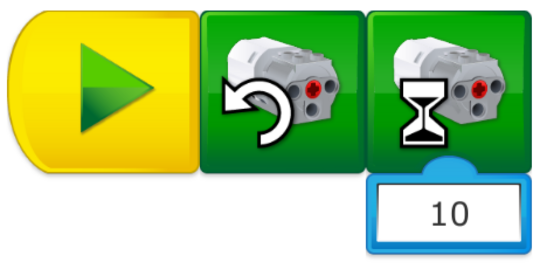

Assessment does not have to encompass all of these skills, an emphasis can be placed on the skills that are most relevant to you and your students.
Enable Students to Find Patterns (Generalization)
A pattern is something that can be applied in the same way in different situations. Here are some patterns your students should consider for this project:
How will they open and close the hand?
How can the Motion Sensor be used in this model?
Which movement(s) will be repeated many times?
Enable Students to Program a Sequence of Actions (Algorithmic Thinking)
The students will need to identify a sequence of actions that will get their robotic arms functioning. Ask them to describe the steps they want to code (e.g., open the clamp, wait for 2 seconds, close the clamp, etc.).
Have them document this process using the Documentation tool.
Enable Students to Improve Their Solution (Evaluation)
One of the challenges of this project is for students to understand how their model really functions. Understanding the limitations of it, and even improving the design of it, will lead students to adjust parameters within their programs in order to improve efficiency and precision.
You can organize a sharing session between teams or in groups so that your students can exchange strategies or tips that could help them to improve their solutions.
Programming Help
Holding Pressure on an Object
To maintain pressure on an object, it is best to program the motor to stay on while grabbing the object. This is exactly how the human hand works.
